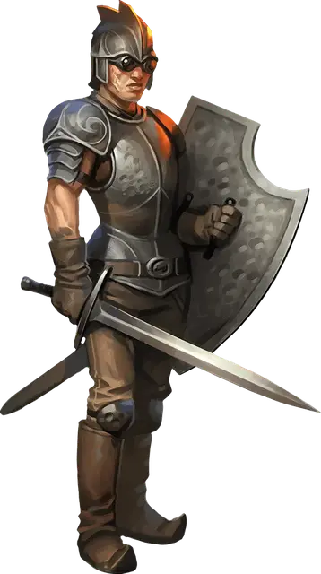

Хранитель Вечного Пламени
Eternal Flame Guardian
Средний Гуманоид (Человек), хаотично-злой

Класс Доспеха 17 (кираса, щит; 15 при использовании арбалета)
Хиты 45 (7к8 + 14)
Скорость 30 футов
| мод | спас | ||
|---|---|---|---|
| СИЛ | 15 | +2 | +2 |
| ЛОВ | 13 | +1 | +1 |
| ТЕЛ | 14 | +2 | +2 |
| мод | спас | ||
|---|---|---|---|
| ИНТ | 8 | −1 | −1 |
| МДР | 11 | +0 | +0 |
| ХАР | 13 | +1 | +1 |
Навыки Восприятие +2, Запугивание +3
Сопротивление урону огонь
Чувства пассивное Восприятие 12
Языки Общий
Опасность 2 (450 опыта)
Бонус мастерства +2
Особенности
Пылающее оружие (перезаряжается после короткого или продолжительного отдыха). Бонусным действием хранитель может сделать так, что одно оружие ближнего боя, которое он держит в руках, охватывает пламя. Хранитель не обжигается от этого огня, а эффект длится до конца его следующего хода. Охваченное пламенем оружие при попадании наносит дополнительный урон огнём 3 (1к6).
Действия
Мультиатака. Хранитель совершает две рукопашные атаки.
Длинный меч. Рукопашная атака оружием: +4 к попаданию, досягаемость 5 футов, одна цель. Попадание: рубящий урон 6 (1к8 + 2).
Тяжёлый арбалет. Дальнобойная атака оружием: +3 к попаданию, дистанция 100/400 футов, одна цель. Попадание: колющий урон 6 (1к10 + 1).
Описание
Хранители Вечного Пламени очарованы силой огня и сами жаждут показать врагам культа, каково это — когда тебя охватывают языки пламени. Они любят поджигать всё подряд, делая это во славу стихии огня, а иногда для собственного удовольствия, но эти олухи редко думают о том, что пламя может перекинуться на что-нибудь важное поблизости.